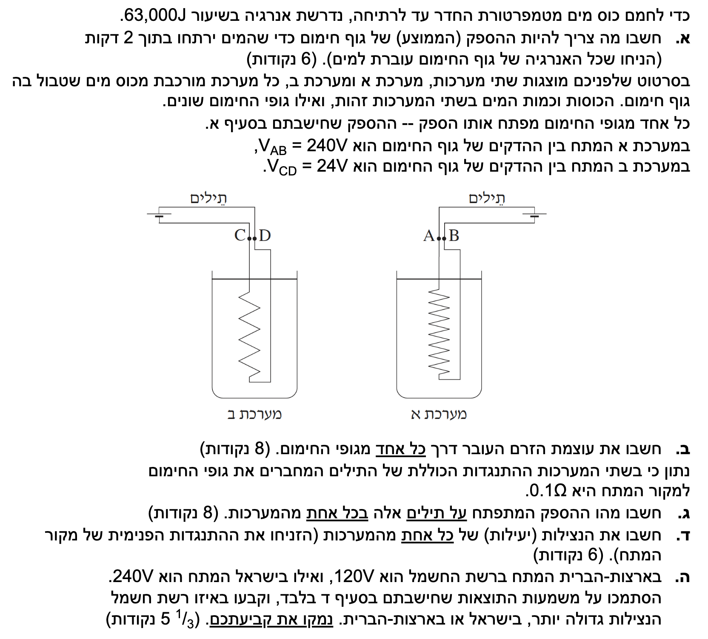
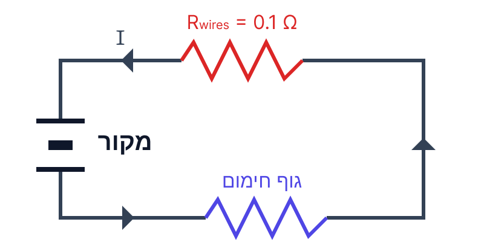

פתרון מלא: חשמל 2013 - שאלה 2
הספק, נצילות ומעגלי זרם ישר
פתרון מודרך, צעד-אחר-צעד הכולל פיתוח נוסחאות והסברים איכותיים.
עודכן:
--- --:--:--

[תמונת השאלה המקורית]
לא נמצאה תמונה בשם question-image.png באותה תיקייה.
מה נתון:
עבור חימום כוס המים עד לרתיחה נדרשת אנרגיית חום: \( \Delta W = 63,000\text{J} \).
תהליך החימום נמשך זמן של \( \Delta t = 2\text{min} \).
שלב 0 - המרת יחידות (MKS):
כדי לעבוד ביחידות התקניות עלינו להמיר את הזמן מדקות לשניות. בכל דקה יש 60 שניות, לכן:
\[ \Delta t = 2 \cdot 60 = 120\text{s} \]
מה מחפשים:
אנו מתבקשים לחשב את ההספק הממוצע \( P \) של גוף החימום, כלומר את קצב אספקת האנרגיה שלו (בהנחה שכל האנרגיה החשמלית עוברת למים ללא איבודי חום לסביבה).
נוסחאות ועקרונות בשימוש:
על פי דף הנוסחאות, הספק ממוצע מוגדר כיחס בין העבודה (או האנרגיה שהושקעה) לבין פרק הזמן שבו היא נעשתה:
\( \overline{P} = \frac{\Delta W}{\Delta t} \)
הצבה ופתרון:
נציב את הנתונים שהמרנו ליחידות MKS אל תוך משוואת ההספק:
\[ P = \frac{63000}{120} \]
\[ P = 525\text{W} \]
הספק גוף החימום הוא \( 525\text{W} \).
טיפ מורה:
הספק הוא קצב. כשאומרים שלגוף חימום יש הספק של \( 525\text{W} \), המשמעות היא שהוא מספק \( 525\text{J} \) של אנרגיה בכל שנייה ושנייה. אל תשכחו תמיד לבדוק את יחידות הזמן – שימוש בדקות היה מוביל לשגיאה חמורה של סדרי גודל!
מה נתון:
נתונות לנו כעת שתי מערכות שונות, א' ו-ב'. בשתיהן גופי החימום צריכים לפתח את אותו ההספק שחישבנו בסעיף א'.
- הספק גוף חימום א': \( P_A = 525\text{W} \)
- הספק גוף חימום ב': \( P_B = 525\text{W} \)
- המתח על הדקי גוף חימום א': \( V_{AB} = 240\text{V} \)
- המתח על הדקי גוף חימום ב': \( V_{CD} = 24\text{V} \)
מה מחפשים:
עלינו לחשב את עוצמת הזרם העובר דרך גוף החימום במערכת א' (\( I_A \)) ואת עוצמת הזרם דרך גוף החימום במערכת ב' (\( I_B \)).
נוסחאות ועקרונות בשימוש:
נקשר בין הספק, מתח וזרם בעזרת הנוסחה המופיעה בדף הנוסחאות:
\( P = V \cdot I \)
מכיוון שאנו מחפשים את הזרם, נבודד אותו אלגברית מקבל את הקשר הדרוש:
\( I = \frac{P}{V} \)
הצבה ופתרון:
נחשב בנפרד עבור כל אחת מהמערכות.
עבור מערכת א':
\[ I_A = \frac{525}{240} = 2.1875\text{A} \]
נעגל ל-3 ספרות מהותיות כנדרש: \( I_A \approx 2.19\text{A} \)
עבור מערכת ב':
\[ I_B = \frac{525}{24} = 21.875\text{A} \]
נעגל ל-3 ספרות מהותיות כנדרש: \( I_B \approx 21.9\text{A} \)
הזרם במערכת א' הוא \( 2.19\text{A} \), והזרם במערכת ב' הוא \( 21.9\text{A} \).
טיפ מורה:
שימו לב לקשר ההפוך: כדי להפיק את אותו ההספק, מערכת שעובדת במתח נמוך פי 10 (24 וולט לעומת 240 וולט) דורשת זרם גבוה פי 10! זהו עיקרון קריטי בחשמל שישליך ישירות על הסעיפים הבאים.
מה נתון:
נתון חדש מתווסף לשאלה: לחוטי החשמל (התילים) המחברים את מקור המתח אל גופי החימום יש התנגדות שאינה זניחה.
- ההתנגדות הכוללת של התילים בכל אחת מהמערכות היא \( R_{wires} = 0.1\Omega \).
- הזרמים במערכות הם הזרמים שזורמים במעגל (חישבנו בסעיף הקודם ונשתמש בערכים המדויקים כדי להימנע משגיאות נגררות): \( I_A = 2.1875\text{A} \) ו- \( I_B = 21.875\text{A} \).
מה מחפשים:
את הספק החום (אנרגיה ליחידת זמן) שמתפתח ("מתבזבז") על גבי התילים המחברים, עקב התנגדותם החשמלית, בכל אחת מהמערכות.
תרשים: מודל של מערכת הכוללת התנגדות תילים וגוף חימום (עבור מערכת אחת)

[תרשים סעיף ג]
לא נמצאה תמונה בשם image-3.png.
נוסחאות ועקרונות בשימוש:
אנו מחפשים ביטוי להספק הכולל זרם \( I \) והתנגדות \( R \). דף הנוסחאות מספק לנו שתי משוואות בסיסיות:
\( P = V \cdot I \)
\( V = I \cdot R \) (חוק אוהם)
כיוון שהנוסחה \( P = I^2 \cdot R \) אינה מופיעה מפורשות בדף הנוסחאות, חובה עלינו לפתח אותה. נציב את הביטוי למתח \( V \) מתוך חוק אוהם אל תוך משוואת ההספק:
\[ P = (I \cdot R) \cdot I \]
\[ P_{wires} = I^2 \cdot R_{wires} \]
הצבה ופתרון:
נחשב את ההספק המתבזבז על התילים בכל מערכת בנפרד.
עבור מערכת א':
\[ P_{wires,A} = (2.1875)^2 \cdot 0.1 \approx 0.4785\text{W} \]
נעגל ל-3 ספרות מהותיות: \( P_{wires,A} = 0.479\text{W} \).
עבור מערכת ב':
\[ P_{wires,B} = (21.875)^2 \cdot 0.1 \approx 47.85\text{W} \]
נעגל ל-3 ספרות מהותיות: \( P_{wires,B} = 47.9\text{W} \).
ההספק המתפתח על התילים במערכת א' הוא \( 0.479\text{W} \), ובמערכת ב' הוא \( 47.9\text{W} \).
טיפ מורה:
שימו לב להשפעה הדרמטית של העלאת הזרם בריבוע! הזרם במערכת ב' גדול פי 10 מהזרם במערכת א'. מכיוון שההספק המבוזבז תלוי בזרם בריבוע (\( I^2 \)), ההספק המבוזבז במערכת ב' גדול פי 100 (!) מההספק המבוזבז במערכת א'.
מה נתון:
אנו מניחים שההתנגדות הפנימית של מקור המתח זניחה (\( r=0 \)).
למדנו שהספק נחלק לשניים במעגל זה:
- הספק מנוצל (מועיל) – זהו ההספק של גוף החימום שמרתיח את המים: \( P_{eff} = 525\text{W} \).
- הספק מבוזבז – זהו ההספק ההופך לחום על חוטי החשמל, שחישבנו בסעיף ג' (למערכת א': \( 0.4785\text{W} \), למערכת ב': \( 47.85\text{W} \)).
מה מחפשים:
אנו מתבקשים לחשב את הנצילות (\( \eta \)) של כל אחת מהמערכות, כלומר מהו אחוז האנרגיה שהלכה למטרה הרצויה מתוך סך האנרגיה שסיפק המקור.
נוסחאות ועקרונות בשימוש:
נוסחת הנצילות מתוך דף הנוסחאות היא יחס בין ההספק המנוצל להספק המושקע הכולל:
\( \eta = \frac{P_{eff}}{P_{in}} \)
מתוך עקרון שימור אנרגיה, ההספק הכולל שמספק המקור (\( P_{in} \)) שווה לסך ההספקים הצרכנים במעגל (בהיעדר התנגדות פנימית):
\[ P_{in} = P_{eff} + P_{wires} \]
הצבה ופתרון:
נחשב את הנצילות עבור כל מערכת (לעתים נהוג לכפול ב-100 כדי להציג את התוצאה כאחוזים).
עבור מערכת א':
\[ P_{in,A} = 525 + 0.4785 = 525.4785\text{W} \]
\[ \eta_A = \frac{525}{525.4785} \approx 0.99908 \]
באחוזים, מערכת א' עובדת בנצילות של \( 99.9\% \).
עבור מערכת ב':
\[ P_{in,B} = 525 + 47.85 = 572.85\text{W} \]
\[ \eta_B = \frac{525}{572.85} \approx 0.9164 \]
באחוזים, מערכת ב' עובדת בנצילות של \( 91.6\% \).
הנצילות של מערכת א' היא כ- \( 99.9\% \), והנצילות של מערכת ב' היא כ- \( 91.6\% \).
טיפ מורה:
שימו לב כמה מתח הפעלה נמוך (מערכת ב') פגע בנצילות המערכת. אמנם 91% נשמע גבוה, אבל כמעט עשירית מהאנרגיה שקנינו מחברת החשמל התבזבזה על חימום חוטי החשמל בתוך הקירות במקום על חימום המים.
מה נתון:
- מתח הרשת הביתית בישראל הוא \( 240\text{V} \).
- מתח הרשת הביתית בארה"ב הוא \( 120\text{V} \).
מה מחפשים:
לקבוע היכן (בישראל או בארה"ב) פועלת רשת החשמל בנצילות גבוהה יותר, ולנמק זאת על סמך המסקנות מהסעיף הקודם.
עקרונות בשימוש (הסבר איכותי):
בסעיפים הקודמים ראינו קשר פיזיקלי ברור המורכב מהשלבים הבאים:
- כדי להפיק הספק נדרש מסוים מצרכן (למשל מקרר, תנור), נשתמש בקשר \( I = \frac{P}{V} \). ככל שמתח הרשת גבוה יותר, הזרם הנדרש להפעלת המכשיר נמוך יותר.
- ההספק המתבזבז בחוטי רשת החשמל (התנגדות התילים) תלוי בזרם בריבוע: \( P_{wires} = I^2 \cdot R \). ולכן זרם נמוך מביא להספק מבוזבז קטן בהרבה.
- ככל שההספק המבוזבז קטן יותר, כך הנצילות של המערכת גדולה יותר (כפי שראינו במערכת א' שפעלה במתח גבוה לעומת ב').
הסבר מילולי:
מכיוון שמתח הרשת בישראל (\( 240\text{V} \)) גבוה משמעותית ממתח הרשת בארה"ב (\( 120\text{V} \)), צריכת אותו הספק בבתים בישראל תדרוש זרימה של זרמים נמוכים יותר דרך חוטי הרשת והעמודים, ולכן איבודי האנרגיה יהיו קטנים יותר.
קביעה: רשת החשמל בישראל פועלת בנצילות גדולה יותר מאשר בארצות הברית.
טיפ מורה:
זוהי בדיוק הסיבה שחברות חשמל בכל העולם בוחרות להזרים חשמל מתחנות הכוח אל הערים בקווי "מתח עליון" (מגיעים למאות אלפי וולטים!). בעזרת מתח עצום, הזרם קטן למינימום אפשרי, ואיבוד האנרגיה על הכבלים העצומים נשאר זניח. טרנספורמטורים (שנאים) בשכונה מורידים את המתח ל-240V לקראת כניסתו לבתים מטעמי בטיחות.